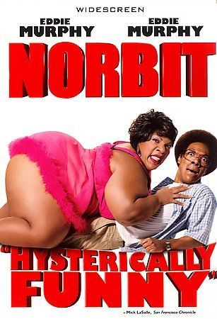

|  | Norbit
Direção: Brian Robbins
Roteiro Eddie Murphy, Jay Scherick
Elenco: Eddie Murphy, Thandiwe Newton, Terry Crews
Norbit (Eddie Murphy) foi criado pelo sr. Wong (Eddie Murphy), que o encontrou ainda bebê no Restaurante e Orfanato Wonton Dourado. Foi neste local que ele conheceu sua alma gêmea, Kate (Thandie Newton). Eles se tornam amigos inseparáveis, até ela ser adotada e deixar o local. Aos 9 anos, Norbit é ameaçado por três garotos da escola, mas é salvo por Rasputia (Eddie Murphy), uma robusta garota de 10 anos. Os dois crescem, namoram e se casam. Juntamente com seus irmãos Jack Grandão (Terry Lewis), Azulão (Mighty Rasta) e Earl (Clifton Powell), Rasputia administra a Construtora Latimore. Norbit é empregado da empresa, sendo sempre ridicularizado pelos cunhados. A vida de Norbit não anda nada bem, mas ela muda após reencontrar Kate, que decide comprar o antigo orfanato do sr. Wong. Porém o que Kate não sabe é que seu noivo, Deion (Cuba Gooding Jr.), planeja transformar o local em um bar de strip-tease, contando com a ajuda dos irmãos de Rasputia. Reanimado por ter reencontrado Kate, Norbit ganha confiança e, aos poucos, passa a enfrentar a esposa e sua família. |
|
Acesse mais em YouTube SESSÕES
|